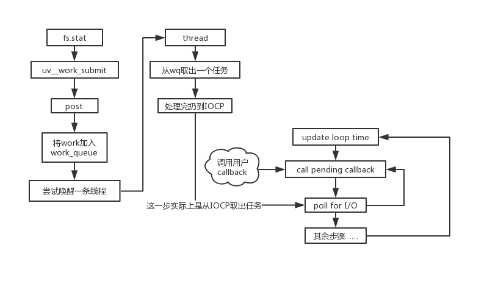

这篇应该能结，简图如下。

上一篇讲到了uv__work_submit方法，接着写了。
void uv__work_submit(uv_loop_t* loop,
struct uv__work* w,
enum uv__work_kind kind,
void (*work)(struct uv__work* w),
void (*done)(struct uv__work* w, int status)) {
// 上篇主要讲的这里 初始化线程池等
uv_once(&once, init_once);
w->loop = loop;
w->work = work;
w->done = done;
post(&w->wq, kind);
}从post开始。
static void post(QUEUE* q, enum uv__work_kind kind) {
// 因为存在队列插入操作 需要加锁
uv_mutex_lock(&mutex);
if (kind == UV__WORK_SLOW_IO) {
//跳...
}
QUEUE_INSERT_TAIL(&wq, q);
// 如果有空闲线程 唤醒
if (idle_threads > 0)
uv_cond_signal(&cond);
uv_mutex_unlock(&mutex);
}wq就是上一篇讲的线程都会用到的那个队列，这里负责插入任务，worker中取出任务。
没想到post到这里没了，这点东西并到上一篇就好了。以后写这种系列博客还是先规划一下，不能边看源码边写……
函数到这里就断了，看似没有线索，实际上在上一节的worker方法中，还漏了一个地方。
static void worker(void* arg) {
// ...
for (;;) {
// 这里调用内部fs方法处理任务
w = QUEUE_DATA(q, struct uv__work, wq);
w->work(w);
uv_mutex_lock(&w->loop->wq_mutex);
w->work = NULL;
QUEUE_INSERT_TAIL(&w->loop->wq, &w->wq);
// 这个是漏了的关键
uv_async_send(&w->loop->wq_async);
uv_mutex_unlock(&w->loop->wq_mutex);
// ...
}
}每一条线程在每次处理完一条事务并将其插入工作队列wq后，都会调用一下这个uv_async_send方法，上一篇没讲这个。
这里的wq_async是一个在loop上面的变量，在轮询初始化的时候出现过，这里先不看。
uv_async_send这个方法又涉及到另外一个大模块，如下。
int uv_async_send(uv_async_t* handle) {
// 错误处理...
if (!uv__atomic_exchange_set(&handle->async_sent)) {
POST_COMPLETION_FOR_REQ(loop, &handle->async_req);
}
return 0;
}
// 将操作结果推到iocp上面
#define POST_COMPLETION_FOR_REQ(loop, req) \
if (!PostQueuedCompletionStatus((loop)->iocp, \
0, \
0, \
&((req)->u.io.overlapped))) { \
uv_fatal_error(GetLastError(), "PostQueuedCompletionStatus"); \
}这个地方说实话我并不是明白windows底层API的操作原理，IOCP这部分我没有去研究，只能从字面上去理解。
关于PostXXX方法官网解释如下：
Posts an I/O completion packet to an I/O completion port.
将一个I/O完成的数据打包到I/O完成的端口，翻译过来就是这样，个人理解上的话大概是把一个async_req丢到IOCP那里保存起来。
接下来终于可以回到事件轮询部分，点题了。
int uv_run(uv_loop_t *loop, uv_run_mode mode) {
// ...
while (r != 0 && loop->stop_flag == 0) {
// ...
// call pending callbacks
ran_pending = uv_process_reqs(loop);
// ...
// poll for I/O
if (pGetQueuedCompletionStatusEx)
uv__poll(loop, timeout);
else
uv__poll_wine(loop, timeout);
// ...
}
// ...
}截取了剩下的poll for I/O、call pending callback，也就是剩下的两部分了。if判断不用管，只是一个方法兼容，最终的目的是一样的。
所以只看uv__poll部分。
static void uv__poll(uv_loop_t* loop, DWORD timeout) {
// ...
// 设定阻塞时间
uint64_t timeout_time;
timeout_time = loop->time + timeout;
for (repeat = 0; ; repeat++) {
success = GetQueuedCompletionStatusEx(loop->iocp,
overlappeds,
ARRAY_SIZE(overlappeds),
&count,
timeout,
FALSE);
if (success) {
for (i = 0; i < count; i++) {
if (overlappeds[i].lpOverlapped) {
req = uv_overlapped_to_req(overlappeds[i].lpOverlapped);
uv_insert_pending_req(loop, req);
}
}
uv_update_time(loop);
} else if (GetLastError() != WAIT_TIMEOUT) {
// ...
} else if (timeout > 0) {
// 超时处理...
}
break;
}
}这里的GetQueueXXX方法与之前的PostQueueXXX正好是一对方法，都是基于IOCP，一个是存储，一个是取出。
遍历操作就很容易懂了，取出数据后，一个个的塞到pending callback的队列中。
把uv_insert_pending_req、uv_process_reqs两个方法结合起来看。
INLINE static void uv_insert_pending_req(uv_loop_t* loop, uv_req_t* req) {
req->next_req = NULL;
// 插入到pending_reqs_tail上
if (loop->pending_reqs_tail) {
// DEBUG...
req->next_req = loop->pending_reqs_tail->next_req;
loop->pending_reqs_tail->next_req = req;
loop->pending_reqs_tail = req;
} else {
req->next_req = req;
loop->pending_reqs_tail = req;
}
}
INLINE static int uv_process_reqs(uv_loop_t* loop) {
// ...
// 处理pending_reqs_tail
first = loop->pending_reqs_tail->next_req;
next = first;
loop->pending_reqs_tail = NULL;
while (next != NULL) {
req = next;
next = req->next_req != first ? req->next_req : NULL;
switch (req->type) {
// handle各类req...
}
}
return 1;
}就这样，完美的把poll for I/O与call pending callback两块内容连接到了一起，也同时理解了一个异步I/O操作是如何在node内部被处理的。
最后还是剩一个尾巴，就是丢到IOCP的那个async_req怎么回事？这个变量在轮询的初始化方法中出现，如下。
typedef struct uv_loop_s uv_loop_t;
struct uv_loop_s {
// ...
UV_LOOP_PRIVATE_FIELDS
};
#define UV_LOOP_PRIVATE_FIELDS \
// 其余变量
uv_async_t wq_async;
// uv__word_done是这个handle的回调函数
int uv_loop_init(uv_loop_t* loop) {
// ...
err = uv_async_init(loop, &loop->wq_async, uv__work_done);
// ...
}
// 第一篇中演示过handle的初始化和运行 很常规的init、start两步
int uv_async_init(uv_loop_t* loop, uv_async_t* handle, uv_async_cb async_cb) {
uv_req_t* req;
uv__handle_init(loop, (uv_handle_t*) handle, UV_ASYNC);
handle->async_sent = 0;
handle->async_cb = async_cb;
req = &handle->async_req;
UV_REQ_INIT(req, UV_WAKEUP);
req->data = handle;
uv__handle_start(handle);
return 0;
}
# define UV_REQ_INIT(req, typ) \
do { \
(req)->type = (typ); \
} \
while (0)从代码里面可以知道，loop上本身带有一个uv_async_t的变量wq_async，初始化后有四个属性。其中需要注意，这个类型的type被设置为UV_WAKEUP。
再回到uv_process_reqs中，处理从IOCP取出的req那块。
INLINE static int uv_process_reqs(uv_loop_t* loop) {
// ...
while (next != NULL) {
// ...
switch (req->type) {
// ...
case UV_WAKEUP:
uv_process_async_wakeup_req(loop, (uv_async_t*) req->data, req);
break;
// ...
}
}
return 1;
}我们找到了处理UV_WAKEUP的case，参数参考上面那个初始化的代码也很容易得知，req->data就是loop初始化的那个handle，req是那个async_req。
方法代码如下。
void uv_process_async_wakeup_req(uv_loop_t* loop, uv_async_t* handle, uv_req_t* req) {
// 丢进IOCP的时候被设置为1了 具体在uv_async_send的uv__atomic_exchange_set方法中
handle->async_sent = 0;
if (handle->flags & UV_HANDLE_CLOSING) {
uv_want_endgame(loop, (uv_handle_t*)handle);
} else if (handle->async_cb != NULL) {
// 进的else分支
handle->async_cb(handle);
}
}这里的async_cb也是初始化就定义了，实际函数名是uv__work_done。
void uv__work_done(uv_async_t* handle) {
// ...
loop = container_of(handle, uv_loop_t, wq_async);
uv_mutex_lock(&loop->wq_mutex);
// 还是那个熟悉的队列
QUEUE_MOVE(&loop->wq, &wq);
uv_mutex_unlock(&loop->wq_mutex);
while (!QUEUE_EMPTY(&wq)) {
// ...
w->done(w, err);
}
}这个done，就是用户从JS传过去的callback……
也就是说call pending callback实际上是调用用户传过来的callback，第二篇的图其实是有问题的，系列完结撒花！